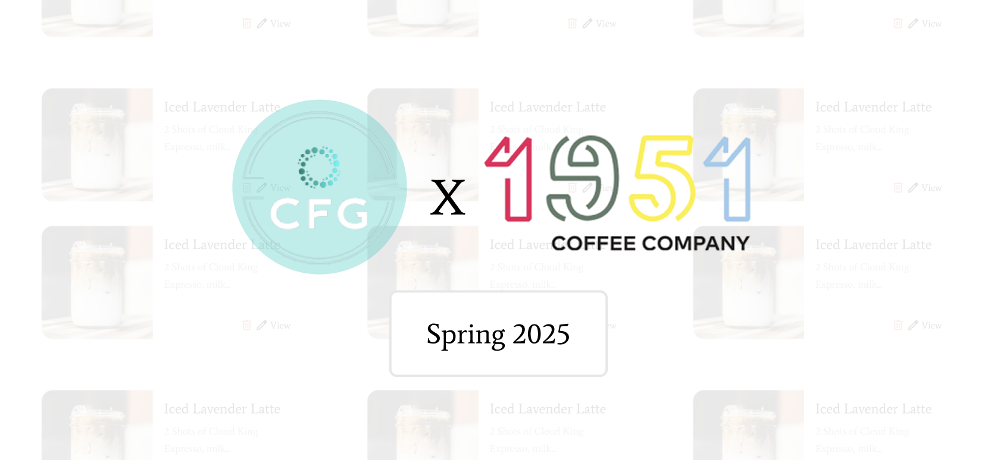
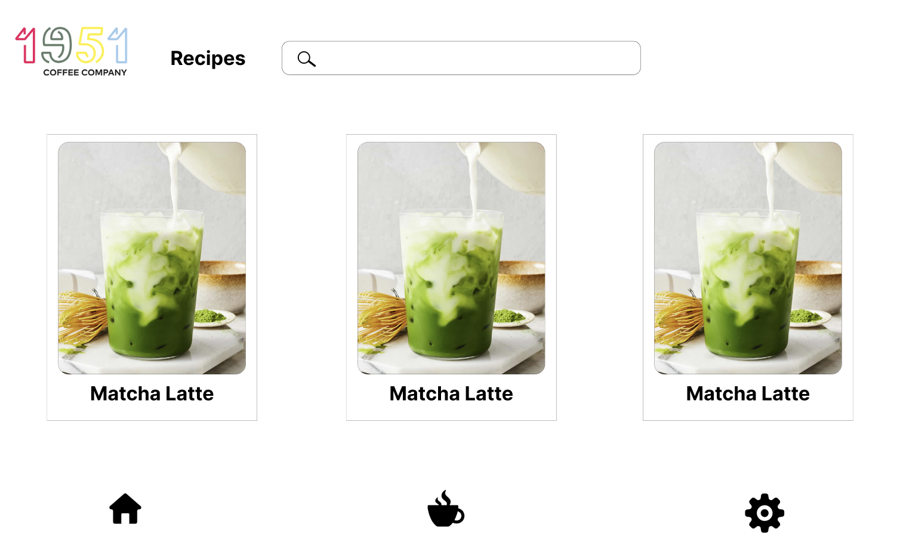
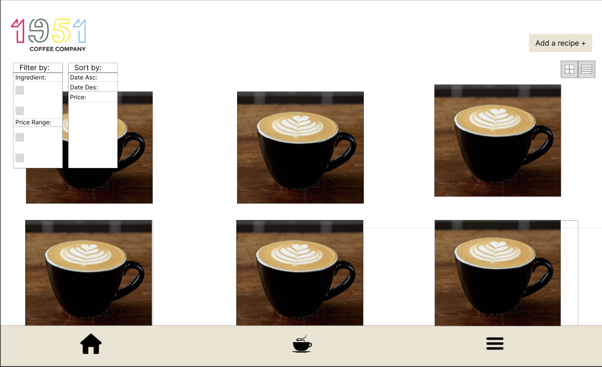
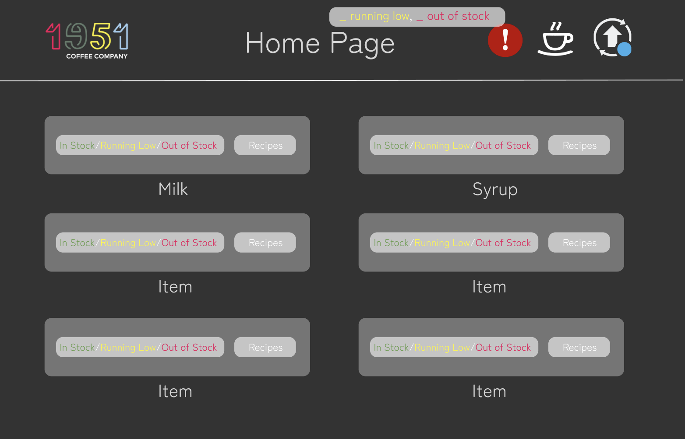

Web App
Recipe and Inventory Tracker
Project Overview
A cleaner way to track recipes, supplies, and inventory needs.
Built an inventory and recipe tracking system that manages ingredient quantities, links them to recipes, and alerts the team when restocking is needed, with Amazon data integration and a MongoDB backend. I focused on the frontend, creating interfaces to add and edit recipes and ingredients.
Initial Brainstorming
Lofi Prototypes
These are some of the very beginning lofi designs during our brainstorming sessions. This platform is for internal use only so the priority design wise was to make everything look simple, clean, and easy to digest. We played around with 1951 Coffee's website design layout and our own creative ideas.



Prototype Flow
Viewing Recipes, Editing Recipes, Add New Ingredients, Add New Recipe
These are the general flows of how our Recipe and Ingredient tracker turned out. We included multiple drop down menus to streamline ingredients and measurment metrics.
Notification and Backend
Alerting, Data Scraping, Database
- Data Scraping Team: Collected ingredient data from Amazon (like names, prices, and availability) and structured it so it could be used in the system for tracking and restocking decisions.
- Database Team (MongoDB): Built and managed the backend database, organizing recipes and ingredients, linking them together, and ensuring all data (quantities, updates, new items) was stored and retrieved efficiently.
- Alerting Team: Developed the notification system that automatically alerts workers when ingredients are low or need restocking, helping the team stay on top of inventory in real time.